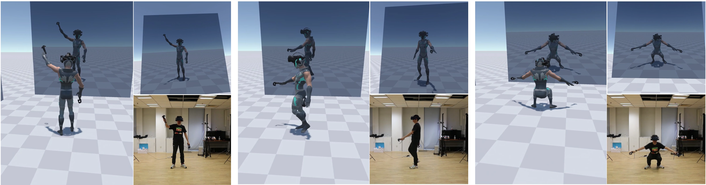

Neural3Points: Learning to Generate Physically Realistic Full-body Motion for Virtual Reality Users
Computer Graphics Forum (SCA 2022)
Yongjing Ye (1,2) Libin Liu†
(3) Lei Hu
(1,2)
Shihong Xia† (1,2)
(1) Institute of Computing Technology, Chinese Academy of Sciences
(2) University of Chinese Academy of Sciences
(3) Peking University

|
Abstract
Animating an avatar that reflects a user's action in the VR world enables natural interactions with the
virtual environment. It has the potential to allow remote users to communicate and collaborate in a way
as if they met in person. However, a typical VR system provides only a very sparse set of up to three
positional sensors, including a head-mounted display (HMD) and optionally two hand-held controllers,
making the estimation of the user's full-body movement a difficult problem. In this work, we present a
data-driven physics-based method for predicting the realistic full-body movement of the user according to the
transformations of these VR trackers and simulating an avatar character to mimic such user actions in the
virtual world in real-time. We train our system using reinforcement learning with carefully designed
pretraining processes to ensure the success of the training and the quality of the simulation.
We demonstrate the effectiveness of the method with an extensive set of examples.
|
|